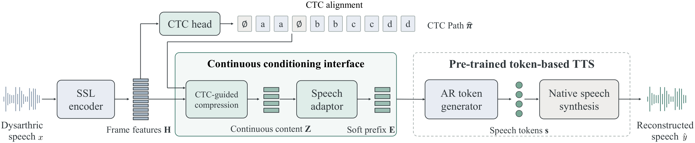
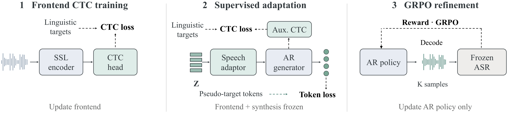
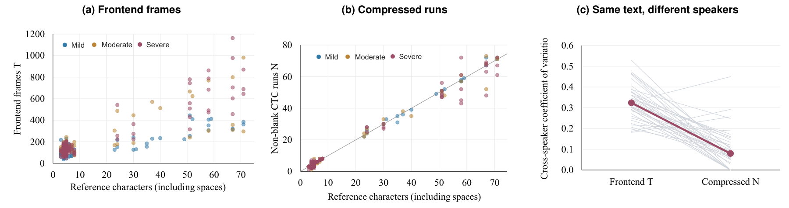
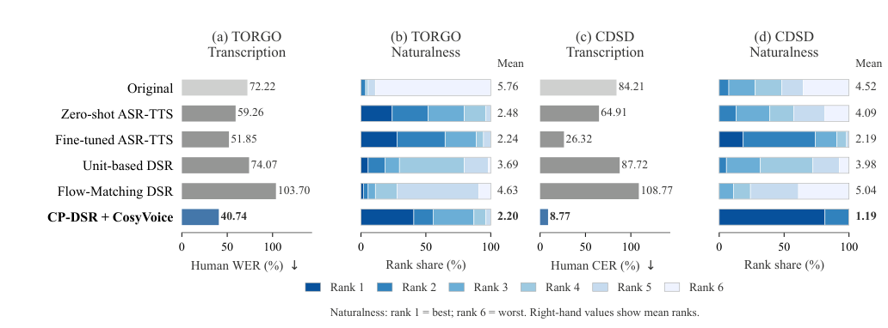
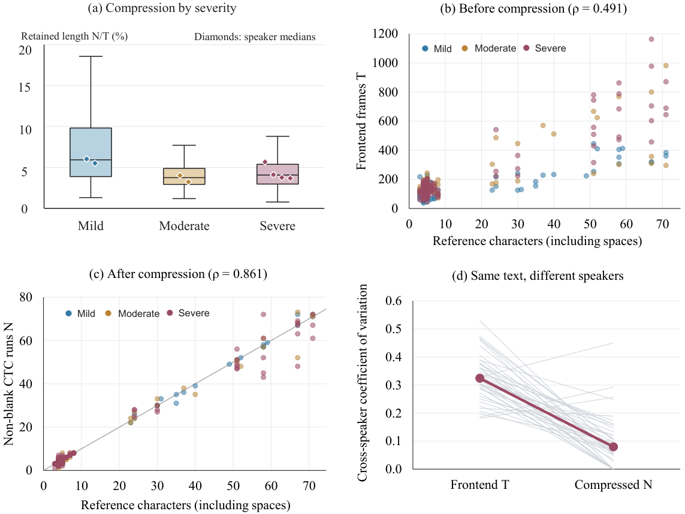
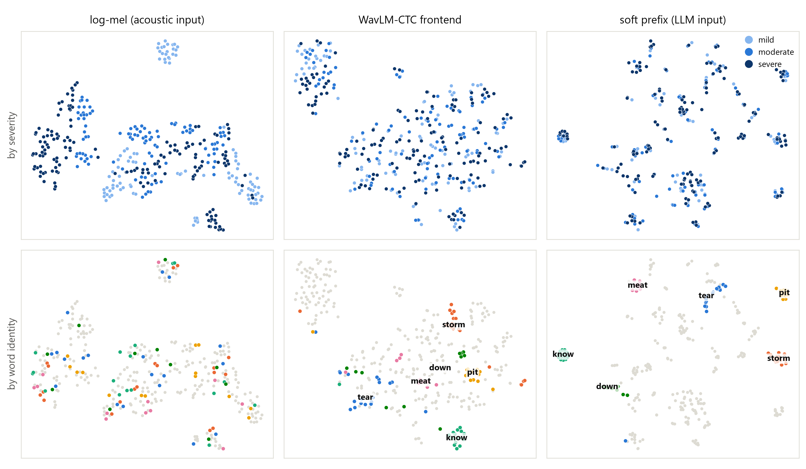
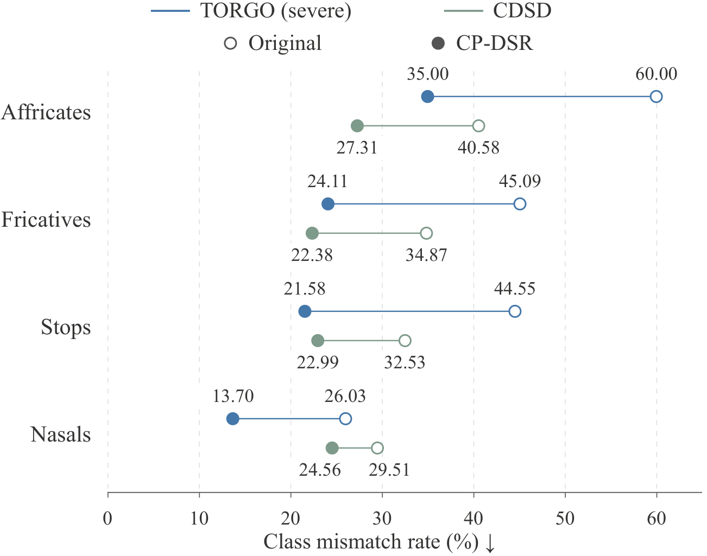

Beyond Hard Transcripts:
A Continuous Interface to Pre-trained TTS for Dysarthric Speech Reconstruction
CP-DSR · Continuous-Prefix Dysarthric Speech Reconstruction
Abstract
Dysarthria is a motor speech disorder that can make a speaker's words difficult to understand through imprecise articulation and atypical timing. Dysarthric speech reconstruction (DSR) aims to make those words intelligible so that listeners can recover the intended message. Recognition–synthesis cascades can carry an incorrectly recognized word into the output, while direct speech-to-speech systems must infer both content and timing from impaired speech. We propose Continuous-Prefix Dysarthric Speech Reconstruction (CP-DSR), a modular framework that uses linguistic alignment to guide pre-trained text-to-speech (TTS) models while retaining acoustic cues from the speaker. Connectionist temporal classification (CTC) provides the alignment. We discard blank-aligned frames and pool the encoder features within each run of identical non-blank labels into one vector, reducing the influence of prolonged sounds. A speech adaptor maps these vectors to a continuous prefix, allowing each TTS backbone to generate speech with its learned timing and prosody. We further refine the generator with group relative policy optimization (GRPO), rewarding reconstructions whose ASR transcripts more closely match the intended words. We evaluate CP-DSR with four pre-trained TTS backbones on TORGO. All four variants outperform the strongest baseline, fine-tuned ASR–TTS, with the best variant achieving 30.43% word error rate (WER) versus 40.51% for the baseline. This variant also outperforms the strongest published comparator on UASpeech isolated-word reconstruction (57.38% vs. 62.19% WER) and achieves the lowest overall character error rate (41.88%) among the reconstruction systems compared on Mandarin CDSD.

Training

Results and analysis
TORGO · WER (%) ↓
| Method | TTS backbone | Mild | Moderate | Severe | Overall |
|---|---|---|---|---|---|
| Original dysarthric speech | — | 18.66 | 31.37 | 100.74 | 57.26 |
| Zero-shot ASR–TTS | — | 25.00 | 38.82 | 88.61 | 55.99 |
| Finetuned ASR–TTS | — | 23.94 | 25.88 | 61.39 | 40.51 |
| Unit-based DSR | — | 30.99 | 50.20 | 76.98 | 55.89 |
| Flow-matching DSR | — | 46.83 | 70.20 | 93.32 | 73.06 |
| CP-DSR | Qwen3-TTS | 22.18 | 32.55 | 46.53 | 35.42 |
| CP-DSR | GPT-SoVITS | 26.41 | 34.51 | 52.23 | 39.66 |
| CP-DSR | VALL-E | 16.20 | 23.92 | 46.29 | 31.18 |
| CP-DSR | CosyVoice | 19.01 | 25.88 | 41.34 | 30.43 |
Text-disjoint, speaker-dependent test set. ASR–TTS uses Whisper-medium and a fixed Piper voice. CP-DSR variants include GRPO. WER is reported as a percentage.
UASpeech · WER (%) ↓
| Method | Overall | F02 | F04 | M05 | M07 |
|---|---|---|---|---|---|
| Source (reported)† | 91.05 | 95.90 | 81.70 | 91.00 | 95.60 |
| ASR–TTS† | 75.30 | 81.60 | 75.40 | 74.20 | 70.00 |
| E2E-DSR † | 71.05 | 72.00 | 69.30 | 69.80 | 73.10 |
| ASA-DSR † | 64.15 | 65.80 | 65.60 | 62.50 | 62.70 |
| Unit-DSR † | 65.08 | 68.30 | 65.50 | 64.40 | 62.10 |
| EA-VAE † | 62.19 | 63.81 | 62.60 | 61.72 | 60.64 |
| Source (our measurement) | 87.75 | 95.30 | 74.10 | 87.10 | 94.50 |
| CP-DSR | 57.38 | 56.40 | 55.90 | 57.90 | 59.30 |
B2 test set; Jasper with greedy decoding and exact-match word scoring. † Literature-reported results. Different source WERs limit direct comparability. CP-DSR uses the CosyVoice backbone.
CDSD · CER (%) ↓
| Method | 01 | 04 | 06 | 08 | 09 | 12 | 20 | Overall |
|---|---|---|---|---|---|---|---|---|
| Piper pseudo-target | 12.48 | 20.26 | 27.66 | 17.87 | 18.98 | 18.93 | 15.59 | 18.12 |
| Original dysarthric speech | 20.72 | 49.20 | 93.74 | 70.72 | 70.08 | 41.31 | 57.40 | 54.49 |
| Zero-shot ASR–TTS | 29.77 | 65.91 | 118.55 | 90.81 | 86.79 | 59.83 | 72.09 | 71.32 |
| Finetuned ASR–TTS | 26.17 | 42.80 | 84.19 | 45.91 | 51.94 | 35.17 | 31.22 | 42.48 |
| Unit-based DSR | 67.78 | 79.07 | 91.93 | 86.62 | 90.13 | 85.46 | 78.80 | 82.79 |
| Flow-matching DSR | 92.20 | 98.27 | 102.27 | 100.10 | 100.42 | 100.76 | 100.10 | 98.97 |
| CP-DSR | 23.03 | 42.56 | 72.22 | 50.95 | 44.91 | 38.07 | 36.41 | 41.88 |
Speaker-dependent 8:1:1 split; columns denote speaker IDs. Recording instances are disjoint; this protocol does not impose a text-disjoint constraint. Reference rows are excluded from reconstruction ranking. CP-DSR uses the CosyVoice backbone.
Human evaluation
| Method | TORGO WER (%) | TORGO rank | CDSD CER (%) | CDSD rank |
|---|---|---|---|---|
| Original speech | 72.22 | 5.76 | 84.21 | 4.52 |
| Zero-shot ASR–TTS | 59.26 | 2.48 | 64.91 | 4.09 |
| Finetuned ASR–TTS | 51.85 | 2.24 | 26.32 | 2.19 |
| Unit-based DSR | 74.07 | 3.69 | 87.72 | 3.98 |
| Flow-matching DSR | 103.70 | 4.63 | 108.77 | 5.04 |
| CP-DSR | 40.74 | 2.20 | 8.77 | 1.19 |
Six listeners and nine utterances per dataset. Naturalness ranks range from 1 (best) to 6 (worst). Lower is better for all columns.
CTC-guided compression

Human evaluation distributions

Additional analyses



Listening samples
Each example includes the original recording and outputs from the available reconstruction systems. CP-DSR is marked in blue. Playing a recording pauses the previous one.
Loading audio library…